import numpy as np
import pandas as pd
import matplotlib.pyplot as plt
from matplotlib import cm
%matplotlib inlineSVM with RBF kernel
SVM with RBF kernel
from sklearn import svm
from sklearn.datasets import make_blobs, make_classification
# Generate some random data for demonstration
X, y = make_blobs(n_samples=20, centers=2, random_state=6)plt.scatter(X[:, 0], X[:, 1], c=y, s=30, cmap=cm.Paired)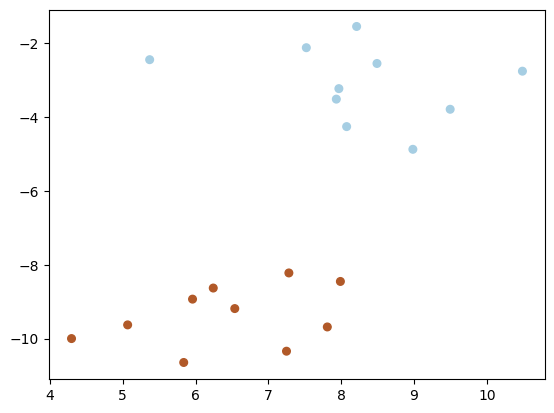
# Create an SVM model with an RBF kernel
model = svm.SVC(kernel='rbf', gamma=0.05)
# Fit the model to the data
model.fit(X, y)
# Access the alpha coefficients
alphas = np.abs(model.dual_coef_.ravel()) # Absolute values of dual coefficientsmodel.support_vectors_ array([[ 8.07502382, -4.25949569],
[ 10.48848359, -2.75858164],
[ 8.98426675, -4.87449712],
[ 5.37042238, -2.44715237],
[ 7.98907212, -8.45336239],
[ 4.29743791, -10.00047495],
[ 7.28183008, -8.2229685 ]])# Plot the support vectors
plt.scatter(model.support_vectors_[:, 0], model.support_vectors_[:, 1], s=100,
linewidth=1, facecolors='none', edgecolors='k')
plt.scatter(X[:, 0], X[:, 1], c=y, s=30, cmap=cm.Paired)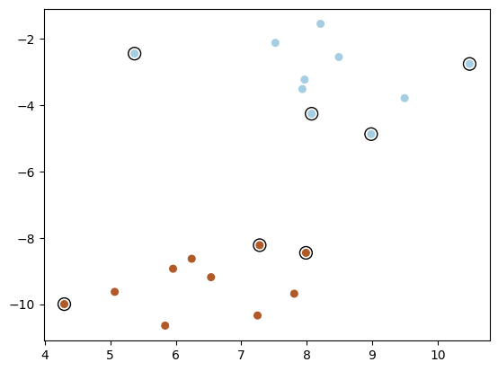
model.support_vectors_.shape, model.support_vectors_((3, 2),
array([[ 8.98426675, -4.87449712],
[ 7.98907212, -8.45336239],
[ 7.28183008, -8.2229685 ]]))model.dual_coef_.shape, model.dual_coef_((1, 3), array([[-0.14522303, 0.11368673, 0.0315363 ]]))w = np.dot(model.dual_coef_ * y[model.support_], model.support_vectors_)
print(w)[[ 1.13789344 -1.2203571 ]]# int
b = model.intercept_
print(b)[-1.99921422]plt.scatter(model.support_vectors_[:, 0], model.support_vectors_[:, 1], s=100,
linewidth=1, facecolors='none', edgecolors='k')
plt.scatter(X[:, 0], X[:, 1], c=y, s=30, cmap=cm.Paired)
ax = plt.gca()
xlim = ax.get_xlim()
ylim = ax.get_ylim()
# Create grid to evaluate model
xx = np.linspace(xlim[0], xlim[1], 30)
yy = np.linspace(ylim[0], ylim[1], 30)
YY, XX = np.meshgrid(yy, xx)
xy = np.vstack([XX.ravel(), YY.ravel()]).T
Z = np.dot(xy, w) + b
# Plot decision boundary and margins
ax.contour(XX, YY, Z.reshape(XX.shape), colors='k', levels=[-1, 0, 1], alpha=0.5, linestyles=['--', '-', '--'])
plt.xlabel('Feature 1')
plt.ylabel('Feature 2')
plt.title('SVM Decision Boundary using dual_coef_')ValueError: shapes (900,2) and (1,2) not aligned: 2 (dim 1) != 1 (dim 0)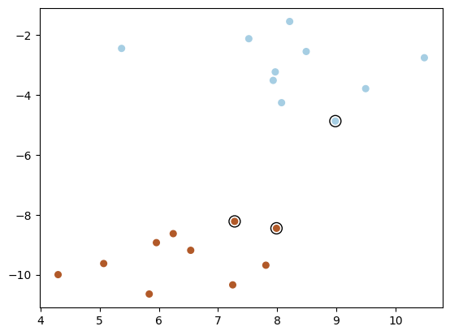
import numpy as np
import matplotlib.pyplot as plt
from sklearn import svm
from sklearn.datasets import make_classification
# Generate some random data for demonstration
X, y = make_blobs(n_samples=20, centers=2, random_state=6)
def fit_svm_plot(kernel='linear', gamma=1.0):
if kernel == 'linear':
model = svm.SVC(kernel=kernel)
else:
model = svm.SVC(kernel=kernel, gamma=gamma)
# Fit the model to the data
model.fit(X, y)
# Extract support vectors and dual coefficients
support_vectors = model.support_vectors_
dual_coefs = model.dual_coef_.ravel()
# Calculate coefficients w
w = np.dot(dual_coefs, support_vectors)
# Calculate intercept b
b = model.intercept_[0]
# Plot the data points
plt.scatter(X[:, 0], X[:, 1], c=y, cmap='coolwarm', s=30, edgecolors='k')
# Plot the decision boundary
ax = plt.gca()
xlim = ax.get_xlim()
ylim = ax.get_ylim()
# Create grid to evaluate model
xx = np.linspace(xlim[0], xlim[1], 30)
yy = np.linspace(ylim[0], ylim[1], 30)
YY, XX = np.meshgrid(yy, xx)
xy = np.vstack([XX.ravel(), YY.ravel()]).T
Z = np.dot(xy, w) + b
# Plot decision boundary and margins
ax.contour(XX, YY, Z.reshape(XX.shape), colors='k', levels=[-1, 0, 1], alpha=0.5, linestyles=['--', '-', '--'])
print("w found using dual_coef_:", w)
if kernel == 'linear':
print("w found using coef_:", model.coef_)
print("b found:", b)
print("Support vectors:", support_vectors)
print("Dual coefficients:", dual_coefs)
fit_svm_plot(kernel='linear')w found using dual_coef_: [-0.16682897 -0.51246787]
w found using coef_: [[-0.16682897 -0.51246787]]
b found: -1.9992142247070375
Support vectors: [[ 8.98426675 -4.87449712]
[ 7.98907212 -8.45336239]
[ 7.28183008 -8.2229685 ]]
Dual coefficients: [-0.14522303 0.11368673 0.0315363 ]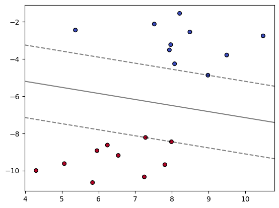
X.shape(20, 2)model = svm.SVC(kernel='linear')
model.fit(X, y)
plot_contour(X, y, model)IndexError: tuple index out of range# calculate w
w = np.dot(model.dual_coef_, model.support_vectors_)
w
for i in range(len(model.support_vectors_)):
print(np.dot(w, model.support_vectors_[i]) + b)[26.57871177]
[8.01611047]
[30.87058547]
[13.97494895]
[66.82209149]
[88.05803336]
[65.85436853]Let us now understand how the gamma parameter works. For that, we will look at a different dataset
from sklearn import datasets
iris = datasets.load_iris()
X = iris.data
y = iris.target
X = X[y != 0, :2]
y = y[y != 0]plt.scatter(X[:, 0], X[:, 1], c=y, zorder=10, cmap=plt.cm.Paired,
edgecolor='k', s=100)
from sklearn import svmdef plot_contour(clf, X, y):
if X.shape[1] != 2:
X = X.reshape(-1, 2)
plt.scatter(X[:, 0], X[:, 1], c=y, zorder=10, cmap=plt.cm.Paired,
edgecolor='k', s=100)
plt.axis('tight')
x_min = X[:, 0].min()-1
x_max = X[:, 0].max()+1
y_min = X[:, 1].min()-1
y_max = X[:, 1].max()+1
XX, YY = np.mgrid[x_min:x_max:200j, y_min:y_max:200j]
Z = clf.decision_function(np.c_[XX.ravel(), YY.ravel()])
# Put the result into a color plot
Z = Z.reshape(XX.shape)
plt.pcolormesh(XX, YY, Z > 0, cmap=plt.cm.Paired, alpha=0.2)
plt.contour(XX, YY, Z, colors=['k', 'k', 'k'],
linestyles=['--', '-', '--'], levels=[-1, 0, 1])# Fit linear SVM
clf = svm.SVC(kernel='linear')
clf.fit(X, y)
plot_contour(clf, X, y)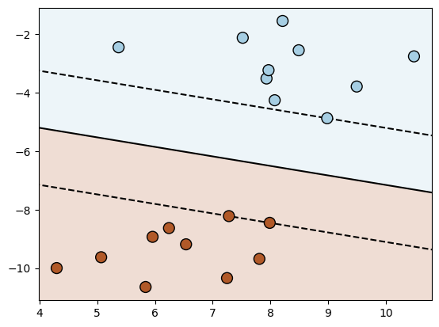
# Fit polynomial SVM of degree 2, 3, 4
for degree in range(3, 7):
clf = svm.SVC(kernel='poly', degree=degree)
clf.fit(X, y)
plt.figure()
plt.title('degree = {}'.format(degree))
plot_contour(clf, X, y)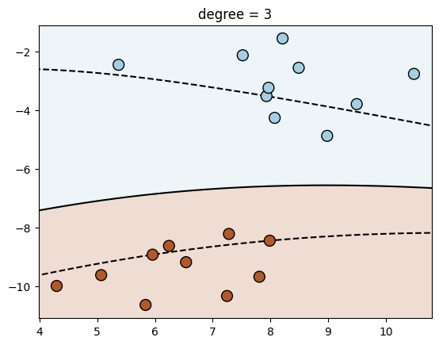
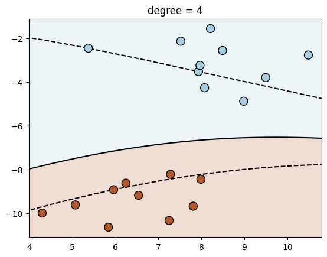
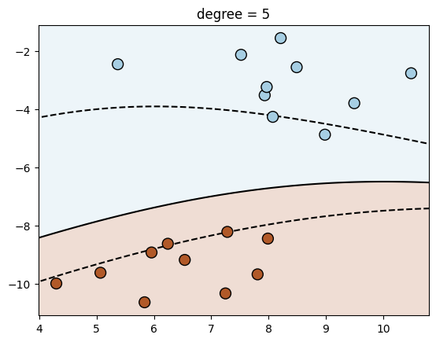
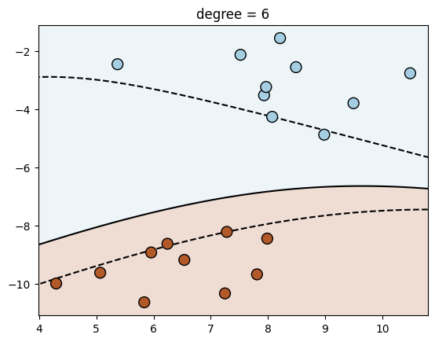
X_train = X
y_train = y
kernel = 'rbf'
# Store kernel matrix
kms = []
for fig_num, gamma in enumerate([0.01, 0.1, 1, 10, 100, 1000]):
clf = svm.SVC(kernel=kernel, gamma=gamma)
clf.fit(X_train, y_train)
plt.figure(fig_num)
plt.clf()
plt.title("gamma = {}".format(gamma))
plot_contour(clf, X_train, y_train)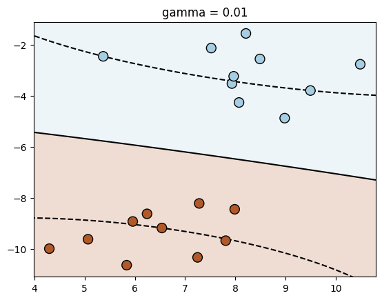
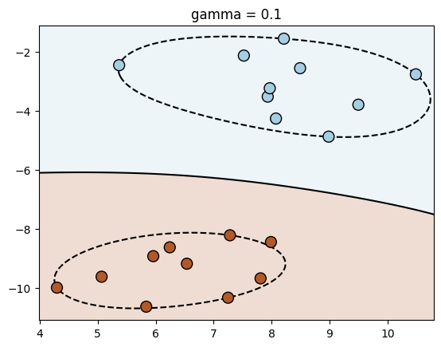
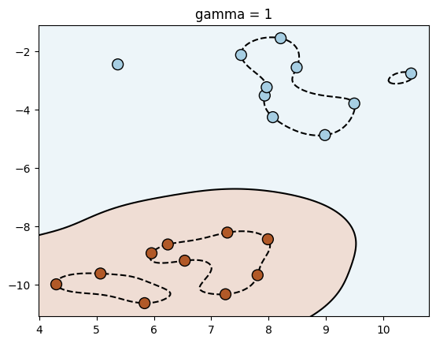
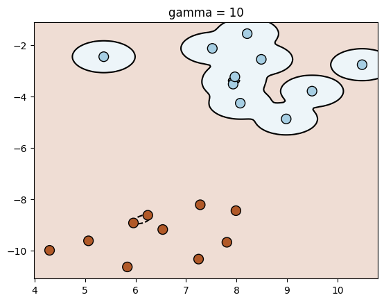
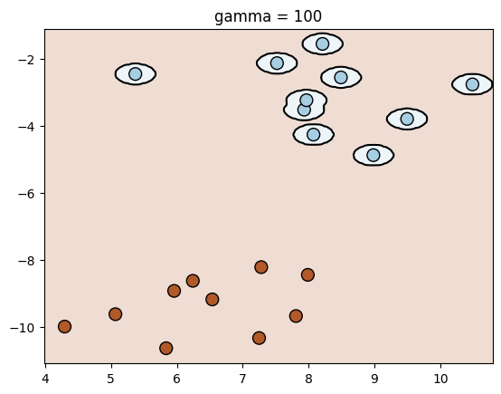
import numpy as np
from sklearn import svm
from matplotlib import pyplot as plt
# Sample data (2 features)
X = np.array([[1, 2], [3, 4], [5, 1], [6, 2], [1, 4], [2, 3]])
y = np.array([1, 1, 1, -1, -1, -1])
# Create RBF SVM classifier
clf = svm.SVC(kernel="rbf")
clf.fit(X, y)
xx, yy = np.meshgrid(np.linspace(X[:, 0].min(), X[:, 0].max(), 400),
np.linspace(X[:, 1].min(), X[:, 1].max(), 400))
# Predict labels for each point in the mesh
Z = clf.predict(np.c_[xx.ravel(), yy.ravel()])
Z.shape = xx.shape
plt.scatter(X[:, 0], X[:, 1], c=y, cmap=plt.cm.coolwarm, s=20, edgecolors='k')
plt.contourf(xx, yy, Z, cmap=plt.cm.coolwarm, alpha=0.4)
plt.xlabel('X1')
plt.ylabel('X2')
plt.title('SVM Decision Boundary with RBF Kernel')
plt.show()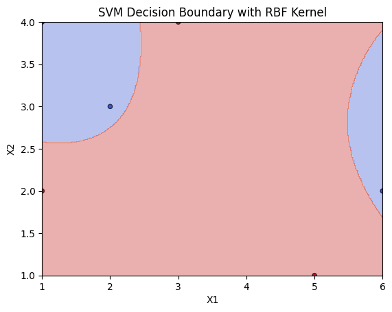
from IPython.display import display
import numpy as np
from sklearn import svm
from sklearn.datasets import make_blobs
from matplotlib import pyplot as plt
from ipywidgets import interact, FloatSlider
# Generate a dataset with blobs
X, y = make_blobs(n_samples=100, centers=2, random_state=0, cluster_std=1.0)
def plot_svm(gamma):
# Create RBF SVM classifier with adjustable gamma
clf = svm.SVC(kernel="rbf", gamma=gamma)
clf.fit(X, y)
# Create a mesh for plotting
xx, yy = np.meshgrid(np.linspace(X[:, 0].min(), X[:, 0].max(), 100),
np.linspace(X[:, 1].min(), X[:, 1].max(), 100))
# Predict labels for each point in the mesh
Z = clf.predict(np.c_[xx.ravel(), yy.ravel()])
Z.shape = xx.shape
# Plot decision boundary and data points
plt.scatter(X[:, 0], X[:, 1], c=y, cmap=plt.cm.coolwarm, s=20, edgecolors='k')
plt.contourf(xx, yy, Z, cmap=plt.cm.coolwarm, alpha=0.4)
plt.xlabel('X1')
plt.ylabel('X2')
plt.title('SVM Decision Boundary with RBF Kernel (gamma={})'.format(gamma))
plt.show()
# Create interactive slider
gamma_slider = FloatSlider(min=0.05, max=20, value=1, description="Gamma")
display(interact(plot_svm, gamma=gamma_slider))<function __main__.plot_svm(gamma)>